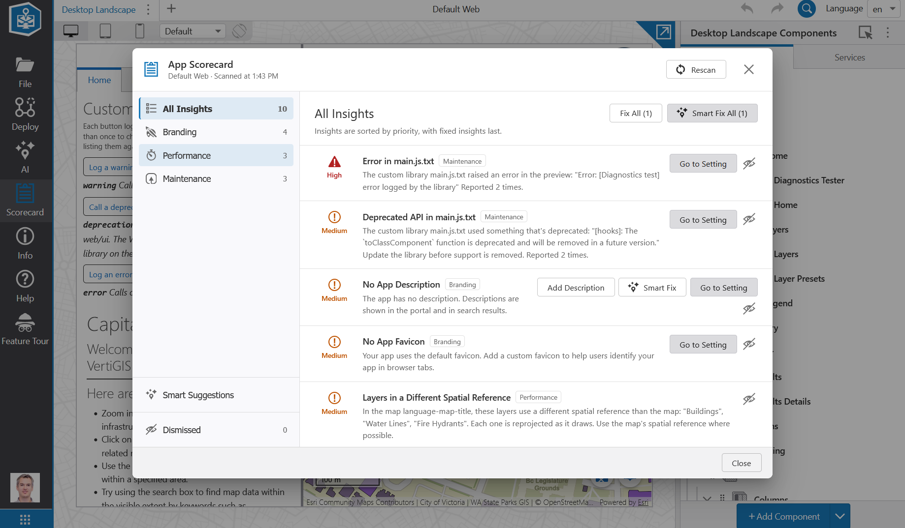

Branding
Does the app look finished?
- No app description
- No app favicon
VertiGIS Hackathon 2026
A health check for VertiGIS Studio Web apps, built into App Designer.
The problem
Our solution

What it checks
Does the app look finished?
Will the app be fast?
Will the app keep working?
Priorities: High · Medium · [add more checks as you build them]
From insight to fix
Error in main.js Maintenance
A custom library raised an error in the preview.
No App Description Branding
Descriptions are shown in the portal and in search results.
Layers in a Different Spatial Reference Performance
Each layer is reprojected as it draws.
Jumps straight to the setting that needs changing.
Uses AI to fix it, like writing the description. Fix All does them all.
Hides what doesn't apply. Rescan to check your work.
How it works
Impact
What's next
Thank you
App Scorecard · [link to repo or demo]